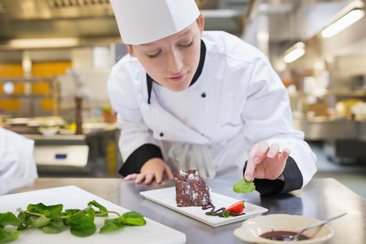
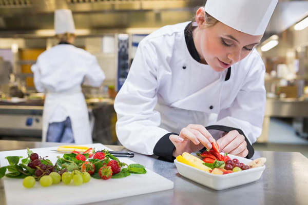

GordonRamsay
Gordon ramsay (GordonRamsay), was born in Glasgow, is Britain's top kitchen god, and the world for its celebrity in various cooking show rudeness and strict, and the pursuit of the perfect style, and by the media called "cook" hell.Gordon ramsay, at the same time in the life plays multiple roles such as chefs and restaurant owners and writers.Ramsey is able to become the world's top chefs, responsible for he takes food kind of TV show host.With the fox signed cooperation with the United States food programs, his income is rising rapidly.Ramsay chaired the "hell's kitchen" series of 6 and 7 series broadcast in the United States last month.
戈登·拉姆齐(GordonRamsay)出生在格拉斯哥，是英国顶级的灶神，在各种烹饪节目中，他的名人都表现出粗鲁和严格，追求完美的风格，被媒体称为“烹饪地狱”。戈登•拉姆齐(Gordon ramsay)同时在生活中扮演着多个角色，比如厨师、餐厅老板和作家。拉姆齐能够成为世界顶级厨师，他负责美食类电视节目主持人。随着狐狸与美国食品项目的合作，他的收入迅速增加。拉姆齐上个月在美国主持了“地狱厨房”系列6和7系列节目。

GordonRamsay
Gordon ramsay (GordonRamsay), was born in Glasgow, is Britain's top kitchen god, and the world for its celebrity in various cooking show rudeness and strict, and the pursuit of the perfect style, and by the media called "cook" hell.Gordon ramsay, at the same time in the life plays multiple roles such as chefs and restaurant owners and writers.Ramsey is able to become the world's top chefs.
戈登·拉姆齐(GordonRamsay)出生在格拉斯哥，是英国顶级的灶神，在各种烹饪节目中，他的名人都表现出粗鲁和严格，追求完美的风格，被媒体称为“烹饪地狱”。戈登•拉姆齐(Gordon ramsay)同时在生活中扮演着多个角色，比如厨师、餐厅老板和作家。拉姆齐能够成为世界顶级厨师。

GordonRamsay
Gordon ramsay (GordonRamsay), was born in Glasgow, is Britain's top kitchen god, and the world for its celebrity in various cooking show rudeness and strict, and the pursuit of the perfect style, and by the media called "cook" hell.Gordon ramsay, at the same time in the life plays multiple roles such as chefs and restaurant owners and writers.Ramsey is able to become the world's top chefs.
戈登·拉姆齐(GordonRamsay)出生在格拉斯哥，是英国顶级的灶神，在各种烹饪节目中，他的名人都表现出粗鲁和严格，追求完美的风格，被媒体称为“烹饪地狱”。戈登•拉姆齐(Gordon ramsay)同时在生活中扮演着多个角色，比如厨师、餐厅老板和作家。拉姆齐能够成为世界顶级厨师。